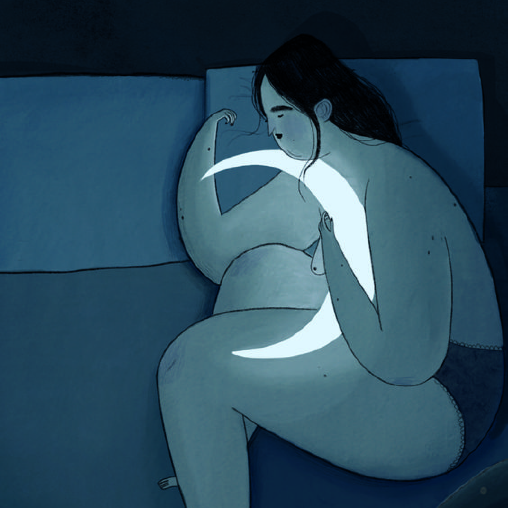

Here we serves as an informative platform dedicated to exploring the
intricate relationship between sleep deprivation and mental health.
Through research-based content and resources, the website aims to shed
light on the profound impact that inadequate sleep can have on mental
well-being, aiming to educate and support individuals in their journey
towards better sleep habits and improved mental health.
Sleep deprivation is a general term to describe a state caused by
inadequate quantity or quality of sleep, including voluntary or
involuntary sleeplessness and circadian rhythm sleep disorders. Sleep is
as important to the human body as food and water, but many of us don't
get enough sleep.
More Strategies >
Consequences
Strategy
Tips & Guides
Additional Resources & Support
Additional Resources & Support
Home

Read More >
sleep deprivation
& MENTAL HEALTH
What is
sleep deprivation ?
Did you know that sleep deprivation can create the same level of
cognitive impairment as drinking alcohol?
Consequences
Strategy
Tips & Guides
Additional Resources & Support
Robert Robertson, 1234 NW Bobcat Lane, St. Robert, MO 65584-5678.
“Break free from timidity and join me in a reciprocal support
network."

An ideal sleep environment is an important part of a healthy bedtime
routine. In the era of working from home, it can be especially
beneficial to have a designated space for rest and personal time.
There are many factors that play into the
design of an ideal bedroom,
and some key ways to ensure the best night’s sleep possible.
Maintain a cool bedroom temperature
Eliminate outside noise
Keep the room dark
Tidy up your sleep space
Try scent therapy
A sleep diary is an important tool for evaluating a person’s sleep.
Doctors often request a sleep diary from the people they treat, but
some people may use one on their own accord.
By keeping a record of sleep, the diary makes it possible to calculate
total sleep time. A sleep record also helps people identify sleep
disruptions and other factors that can influence
sleep quality.